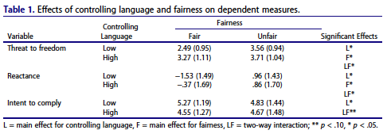
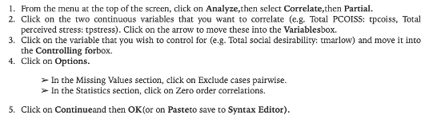
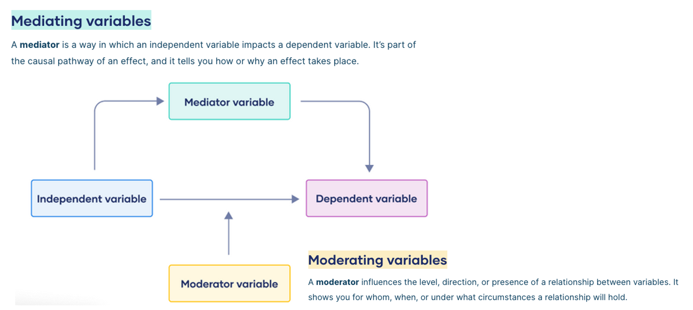

Week 12: Data Analysis and Interpretation Part II
Assistant Professor | School of Information Science
Housekeeping
Project Timeline
Only 5 weeks left! 4 groups have been approved by IRB
Goal is to launch survey as soon as possible (workshop tonight will demonstrate steps)
We will work with as many people as we can get!
Group should be working on front end (literature review, hypotheses, methods)
What’s Next?
Overview of Today
Variable Relationships!
- Brief Review
- Correlation
- Partial Correlation
- Multiple Regression
Brief Review on BG and WS Difference Tests
Already Covered:
- Descriptive Statistics
- Inferential Statistics
- Nonparametric tests (Chi-Square)
- Group Differences (t-tests)
- ANOVA, Factorial ANOVA, ANCOVA, MANOVA, Repeated Measures MANOVA
Visualizing
Quick Knowldge Check
What is the difference between a One-way ANOVA and a Factorial ANOVA?
Real Life

Real Life

The analysis revealed significant main effects of controlling language, F(1, 301) = 16.16, p < .001, η2 = .05, and fairness, F(1,301) = 41.66, p < .001, η2 = .12, as well as a significant interaction, F(1, 301) = 7.41, p < .01,η2 = .02.
The analysis revealed significant main effects of controlling language, F(1, 301) = 8.60, p < .01, η2 = .03, and fairness, F(1, 301) = 104.26,p < .001, η2 = .26, as well as a significant interaction, F(1, 301) = 11.91, p < .001, η2 = .04.
The analysis revealed a significant main effect of controlling language, F(1, 301) = 8.03, p < .01, η2 = .03, and a marginally significant interaction, F(1, 301) = 3.22, p = .07, η2 = .01; the fairness main effect was not significant, F(1, 301) = 1.01, p = .32, η2 = .00.
What Test is Appropriate!
- 1 between groups IV (2 levels), 1 normally-distributed DV
- EX: Do men and women differ in stats achievement?
- 2 categorical variables
- EX: Is gender associated with political party preference?
- A 2 x 3 between subjects design, 1 normally-distributed DV
- EX: Do gender and class time (morning, noon, night) interact to affect achievement?
- 1 between groups IV (4 levels), 1 normally-distributed DV
- EX: Do NCAA basketball tournament regions differ in terms of field goal percentage?
What Test is Appropriate!
- 1 within subjects IV (2 levels), 1 normally-distributed DV
- EX: Do students have more research methods knowledge at the end of 665 compared to the beginning?
- 1 within subjects IV (4 levels), 1 normally-distributed DV
- EX: How does research method knowledge change from January to April (4 months)?
- A 2 x 3 x 2 mixed design with repeated measures on the third variable, 1 normally-distributed DV
- EX: Do gender and class time
- 1 between groups IV (4 levels), 3 normally-distributed DVs
Example Study 1
After That?
Example Study 2
GLM Ch. 21 & (Parts of) 22
21: Analysis and Interpretation of Basic Associational Research Questions
22: Analysis and Interpretation of Complex Associational Questions
Ch. 21 Overview
Chapter 21 (p. 369-385) covers:
- Analyzing Continuous Variables with Parametric Statistics
- Pearson Product-Moment Correlation (r)
- Statistical Significance
- Correlation Matrix
- Effect Sizes
- Confidence Intervals
- Using Nonparametric Associational Statistics
- Spearman Rank-Order Correlation Coefficient (rho)
- Kendall Tau Coefficient (tau)
- Misleading Correlation Coefficients (p. 374-376)
- Associational Statistics for Nominal Variables
- The Chi-Square Test and Effect Size Indices
Remember Pearson
What are correlations?
An index of the strength of the linear relationship between two variables
- Ranges from -1 to +1
- A positive relationship means that as scores on one variable increase, scores on the other variable also increase.
- An inverse relationship means that a high score on one variable is associated with a low score for the same person on the other variable and vice versa.
Correlation Matrix
Teven, J.J. (2007). Teacher temperament: Correlates with teacher caring, burnout, and organizational outcomes. Communication Education, 56, 382-400.
Correlation Matrix
Usher, E. L. (2007). Tracing the origins of confidence: A mixed methods exploration of the sources of self-efficacy beliefs in mathematics (Unpublished doctoral dissertation). Emory University, Atlanta, GA.
Correlation Matrix
Ch. 22 Overview
- Use and Interpretation of Multiple Regression
- Correlation and Bivariate Regression
- Conditions and Assumptions
- Computing Multiple Regression (partial correlations)
- Hierarchical Multiple Regression
- Simultaneous Multiple Regression
- Stepwise Multiple Regression
- Logistic Regression
- Discriminant Analysis
What is Regression?
In linear regression, the regression coefficient represents the amount of change in the dependent variable for one-unit change in the independent variable.
Defining Types of Regression
Conducting the Tests in SPSS
Correlation
Also known as Pearson’s Product Moment or Pearson’s r
Assess relationship between two continuous variables
Variable 1: Total Perceived Stress (tpstress)
Variable 2: Total Perceived Control of Internal States (tpcoiss)
- Check for Outliers
- Inspect distribution of data points
- Determine direction of relationship
- Determine strength of relationship
The nonparametric* alternative is Spearman’s rho
*Inferential statistics that are used when the data do not meet the assumption of normality.
Understanding the Output
Effect Sizes for r
- Small r = .10 to .29
- Medium r = .30 to .49
- Large r = .50 to 1.00
Cohen (1988, pp. 79-81)
Writing it Up
Partial Correlation
A measure of the relationship between the independent variable and the criterion variable, keeping the other independent variables constant.
TL;DR: It has a control.
Variable 1: Total Perceived Stress (tpstress)
Variable 2: Total Perceived Control of Internal States (tpcoiss)
Control: Total Social Desirability (tmarlow)
- Check assumptions (normality, linearity, homoscedasticity)
- Inspect distribution of data points
- Determine direction of relationship
- Determine strength of relationship

Understanding the Output

Effect Sizes
- Small r = .10 to .29
- Medium r = .30 to .49
- Large r = .50 to 1.00
Cohen (1988, pp. 79-81)
Writing it Up
Multiple Regression
Includes several continuous and/or dichotomous IVs and one continuous DV
H1: How well do the two measures of control (mastery, PCOISS) predict perceived stress?
H2: Which is the best predictor of perceived stess: control of external events (mastery scale) or control of internal states (PCOISS)?
- DV should be at least interval (normally distributed)
- IVs tend to be as well, but you can have dichotomous IVs. These are called dummy variables
- Must check for Multicollinearity
- Occurs when there are high intercorrelations among some set of predictors
- Two or more predictors contain much of the same information
- IVs are related to DVs in linear fashion
- Straight line
- Not curvilinear
- IVs should be correlated with the DVs, but not highly
Checking MR Assumptions
Interpreting the Outpet
Unstandardized Interpretation
For every 1 unit increase in mastery, perceived stress decreases by -.63 points
Standardized Interpretation
For every 1 standard deviation increase in mastery, perceived stress decreases by -.42 standard deviation.
Mediation & Moderation
Other Forms of Regression
A categorical outcome variable is something that is predicted to happen or not. Based largely in probability, as the outcome is dichotomous.
Variables are entered in steps, and the CHANGE in R2 is examined at each
The order is decided ahead of time
Are there things that need to be controlled? Enter these first!
The computer instead of the researcher decides the order and how many of the predictors are used.
Describes how much more each IV has contributed to the prediction from the predictors already used.
Another Knowledge Check!
Summary and Review
- Changing up next week to give more hands on analysis
- Example write ups and tables in Canvas
- There are too many types of regression
- Still cannot say ‘predict’ unless design is experimental
- Theory is still driving choices
Workshop: Connecting Surveys to CI SONA
Broad Steps
- Finish surveys
- Double check them
- Complete research subjects request form
- Get IRB approval and retain approval number
- Add survey to SONA
Embedd ID
For Qualtrics:
- MUST add embed data to survey flow
Setting up CI SONA
Selecting the Type of Study
Adding the tag
Redirecting
After SONA generates your unique URL, you must add this back to Qualtrics so that participants are redirected.
Scott Johnson
Add Scott Johnson (scott.johnson@uky.edu) as a collaborator.
He is the resident Qualtrics guru and keeper of the SONA.